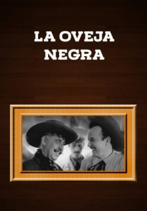

La oveja negra (1949)


Etiquetas:ComedyDramaMusic
País:México, 104 minutos.
Idiomas:Español
GénerosComedia, Drama, Música
Director/es:
Guionistas:
Códec de vídeo:Unknown
Número: 3791
TomatoMeter:

--

--
Clasificación IMDb:


7.9/10 (423 votos)
Certificación:
Argumento:
The Trevino family tries to overcome the irresponsible behavior of Don Cruz, an erratic father with numerous defects that contrast with his son Silvano, a young kid man that is incapable of passing judgment on his own father.
Reparto
Medio: Archivo de video,
Localización: D:\PELICULAS\ACTORES\Pedro Infante\Pedro Infante La Oveja Negra [691,33 Mb] (Pedro Infante)\Pedro Infante La Oveja Negra.avi
Prestado: No
Rel. aspecto: Unknown